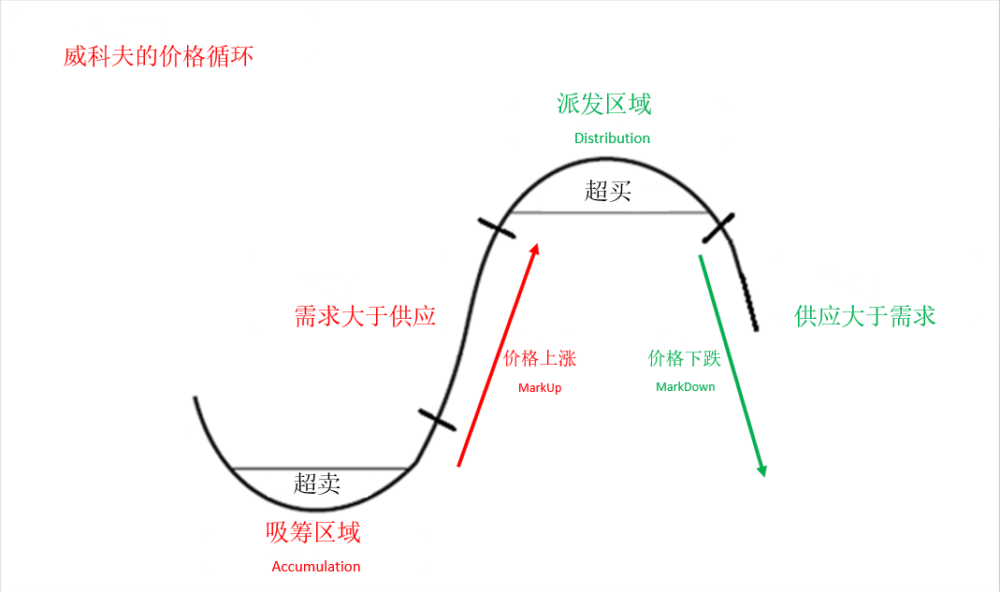
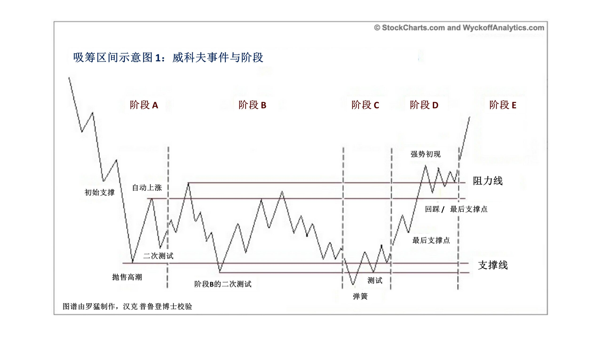
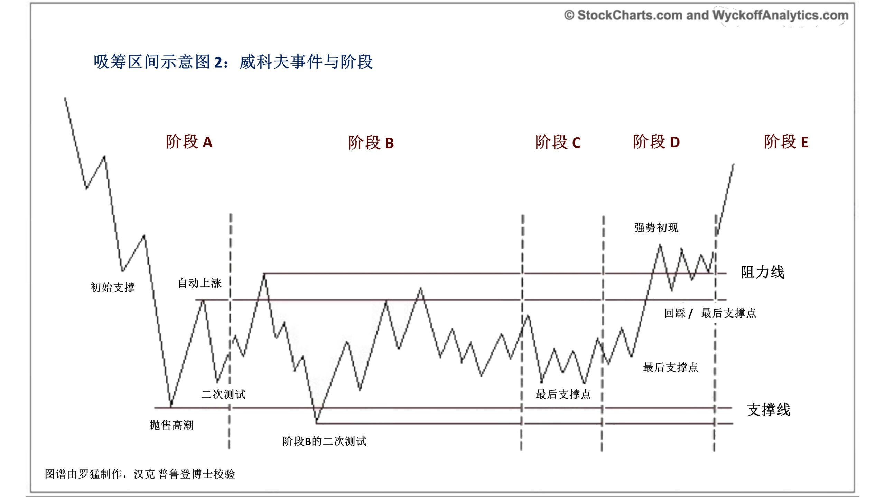
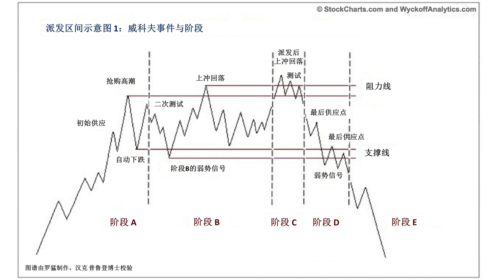
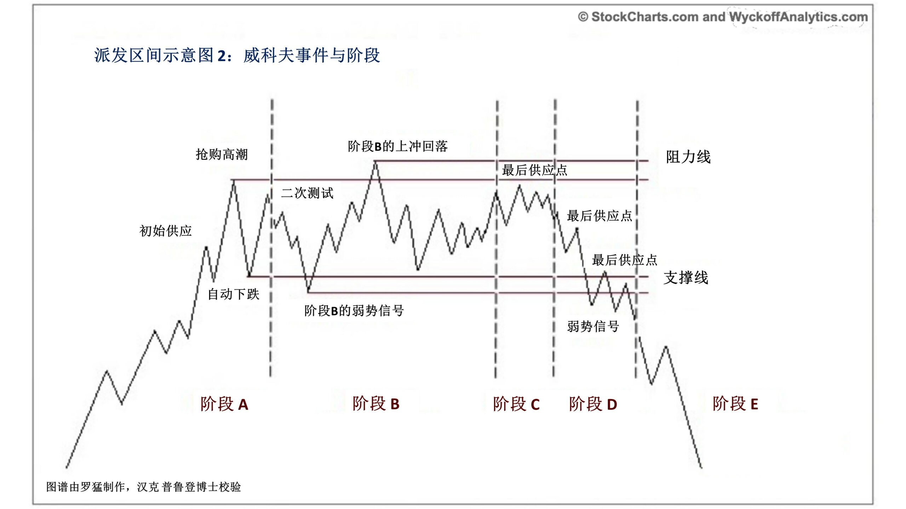

技术分析
道氏理论
趋势线和加速线

- 趋势线
- 最少穿越两个高点和低点
- 触点越多越有效，时间越长越有效
- 有效:表示很稳定。 如果在趋势线上方，代表趋势很完整，不需要着急走。
- 趋势=惯性=平衡
- 趋势线没有支撑作用
- 最少穿越两个高点和低点
- 趋势线的角度，两条加速线到顶
- 以前在纸上画趋势线角度，现在在电脑上角度随缩放变化
- 45度左右，趋势平稳
- 60度左右，行情开始不稳定
- 80度左右，非常不稳定
- 两条加速线到顶
- 行情可能不稳定
- 以前在纸上画趋势线角度，现在在电脑上角度随缩放变化
- 趋势线的毛刺
- 穿透，跌破，回抽: 根据K线组合+量+缺口判断
- 如果没有产生明确的K线组合+量+缺口: 可以忽略
- 两个大阴线或者一根大阴线+小十字星+大阴线: 超过5%，趋势可能发生改变。但是不一定反转，也可能变成形态 (中继形态，反转形态)
- 穿透，跌破，回抽: 根据K线组合+量+缺口判断
- 趋势线跌破后的回抽
- 强势回抽，两根大阴线跌破，两根大阳线回去 ==> 趋势延续 ==> 抢筹
- 弱势回抽，两根大阴线跌破，缩量小阳线慢慢回到趋势，需要等信号
- 继续有大阴线，行情可能翻转
- 没有大阴线，行情继续
- 横向盘整，大概率有个波浪理论的ABC下跌
形态
趋势之后，盘整期间会形成形态。
反转形态
头肩底 ABCD

倒三角形，喇叭形

菱形，钻石型

- 圆弧形，茶杯带柄，老鸭头
- 最好带量跌破或突破

- 岛型反转

中继形态
- 直角三角形/ 直边三角形，概率很高
- 突破买入
- 跌破卖出
- 突破买入

- 普通三角形，楔形，旗形, 窄幅震荡箱体
- 盘整过程中，波动率小

- 盘整过程中，波动率小
- 通道

总结
- 波动率小，中继形态。持有
- 波动率大，反转形态。买卖点
- 波动率大赚小，买入机会
缺口理论
适用于A股，美股和商品期货: 集合竞价会产生缺口
- 形态内的缺口几乎没有意义
- 形态突破的缺口追重要
- 关键位置缺口次之
缺口是反人性的，有了缺口要沿着方向做

支撑与压力测试
- 需要有盘口来确认是否时支撑或压力
点位支撑压力测试
- 前期点位 : 历史记忆，基本面估值 (机构拉上去)
- 斐波那契反推点
- 谐波点位反推
- 缺口处形成支撑
- 整数关口
成交量形成的支撑与压力 Volume profile

支撑与压力互换
- 点位
- 箱体

交易区间和盈亏比的运算

突破、逆转与持续结构
- 三个买入点 突破、逆转与持续

威科夫交易 tape reading
- 盘口三大因素:
- 挂单(maker)
- 成交(分时量，每个时间点位成交数量)/吃单(taker)
- 分价量(每个价位成交数量)
三大法则
- 拉动价格是本质是供给与需求，导致价格的上升与下跌
- 供给: 谁在买
威科夫的综合人（Composite Man）
威科夫提醒交易者应该跟随综合人（Composite Man）的脚步，像综合人一样思考。他说
要把市场中所有的股票、所有的波动都当做一个人操作的结果，这个人称之为综合人。从理论上说，这个人在后台操控着股票。如果你熟悉他的游戏规则，你将大大收益；如果你不懂他的规则，他的操作将不利于你。
总而言之，威科夫的理念认为:：
综合人认真地计划、执行并完成自己的股票操作过程。
综合人在积累了大量的筹码以后，就通过高成交量来吸引散户进场买入。通过大量的买入和卖出，成交量显著放大，向散户显示这只股票前景广阔。
交易者必须研究个股图谱，并判断股票的行动特点和综合人的动机。
通过学习和训练，交易者可以有能力洞察图谱背后隐藏的综合人动机。威科夫和他的同事们认为，如果你能了解综合人的意图，你就能更早地发现交易和投资机会，并且从中获利。
- 吸筹: 在哪个区间
- 配发区: 在哪个区间卖
- 对手和其他机构的购买成本
- 支撑与压力 (筹码)
- 供给: 谁在买

- 因果
- 吸筹区才会有上涨区
- V型反转，卖单衰竭，上涨
- 努力没结果
- 努力了没有结果肯定有问题
应用
- 识别: 10多个识别模式
- 跟随: 跟大资金
- 调整: 主力进，你进。主力跑，你跑
识别模式
- 大阳线: 大的垂直供应柱
- 大阴线: 大的垂直需求柱
- 吸筹区:
- 涨: 大阳K资金吸筹
- 跌: 小K线散户出货
- 吸筹区可能会失败
- 一个股票要涨，一定有资金的痕迹
- 涨，放量，大阳K:上涨放量，大阳K。表示有需求，资金吃货。
- 跌，缩量，小K线:量价配合的缩量小K回撤，散户立场
- 底部放量十字星或小K线，筹码交换
- 量价异常的小十字星会小K线
- 强势出现
- 跳跃小溪
跳过指价格放量穿过阻力区且振幅比较大。回调则是在跳过以后立即测试价位——回调时是缩量的且振幅小—这就确认了之前的跳过行为是正常的。 威科夫方法告诉你在向上跳的回调处买入，或在向下跳的反弹处做空。同样是威科夫方法告诉你不要在突破时买入，如果突破是假的，你就很被动。因此，第一眼看去，似乎威科夫方法是叫你买弱卖强。但如果你仔细研究后你就会明白，他是叫你在强势信号之后的回调测试时买入
- 终极震仓
终极震仓: 不一定出现，也可能出现多次，庄家最后试探，马上拉起。

吸筹


派发
 
威科夫五步法
确定市场的现状和未来可能的趋势
目前的市场是盘整还是处于行情中？通过你对市场的结构和供需状况进行分析，是否认为近期将会出现行情？这个分析将决定你是否应该进入市场；如果可以入市，是应该做多还是做空？在这个环节中，要使用市场主要指数的k线图和点数图来进行判断。选择与市场趋势一致的股票
在上涨趋势中，选择走势比市场更强的股票。比如，寻找那些在市场拉升中比大市指数增长比例多、在调整中比大市指数下跌少的股票。在下跌趋势中，选择弱于市场的股票。如果你对某只个股不确定，那就继续筛选其他股票。在这个步骤，将个股与最相关的市场指数进行比较，进行选股。选择“原因”等于或超过您的最低目标的股票
在威科夫的选股和交易管理中，一个重要组成部分是使用点数图（P＆F）来预测目标价位。不管是长线还是短线交易，这个独特方法同样适用。在威科夫的“因果关系”的基本原理中，交易区间内的水平点数计算代表“原因”，随后的价格移动代表“结果”。因此，如果您打算做多，就要选择正在吸筹或再吸筹的股票，并有足够的上涨“原因”来满足您的要求。步骤3要使用个股的点数图（P＆F）。确定股票已经做好准备移动
模式识别当股市指数反转时，要及时有应变措施
3/4 以上股票的走势和市场一致。把握市场的动向才能提高交易的成功率。某些具体的威科夫交易原则会帮助我们尽早发现市场可能的转折点。例如，特性改变K线，即在大幅上涨后出现的高量大阴线，能够警示我们保护利润。其他措施，例如设好止损单，然后使用威科夫的浮动止损，追随行情，攫取最大利润，直到交易结束。
威科夫三大原理
威科夫的图谱分析法基于三大原理，这三大原理影响了股票分析的各个方面。 比如对于市场指数和个股的方向预测、如何选股、进场的合适点位，以及价格目标的预测。
- 供需原理决定了价格的方向
当供小于求时，价格就会上涨；当供大于求时，价格就会下跌。交易者可以通过K线和阴阳波段的量价关系来分析供需关系。这个定律听起来很简单，但是需要花费很长时间进行练习，才能精准地把握量价关系。
- 因果原理能说明未来价格涨跌的幅度
因果关系可以帮助投资者预测目标价位。 可以用点数图来分析原因并预测结果。 “因” 就是点数图中的水平点数，“果”就是由这些点造成的股价上下运动。可以通过交易区间的吸筹或派发的力度，以及其后价格向上或向下的趋势运动来观察分析。
- 努力与结果原理可以提前预警趋势的变化
成交量和价格之间的不协调常常是趋势即将发生改变的信号 。比如在经过很大的一段拉升之后，股票连续放量，但股价的涨幅却在缩小。这个现象说明庄家正在出货。
江恩理论1
前期是神秘学，后期江恩有意义。
循环:
- 分形
- 大浪套小浪
周期:
- 小波动率后是大的波动率，大的波动率后是是小的波动率。
- 资金曲线，一个月挣的钱，三天亏光。小鸟一样吃，大象一样的拉。
- 期货高手: 媒体造神，开创基金，亏得一塌糊涂
- 周期: 股票价格有周期，方法有周期。一旦方法不合适，不做。
- 春生、夏长、秋收、冬藏
- 小波动率后是大的波动率，大的波动率后是是小的波动率。
波浪理论2
一个完整的周期是由五浪上升，三浪下跌

大小周期 分形:大浪包小浪

牛熊周期，八浪对应，


机构操盘 养 套 杀
- 在关键点位大资金推高股价
回调与反抽的计算
- 0.38, 0.5, 0.618